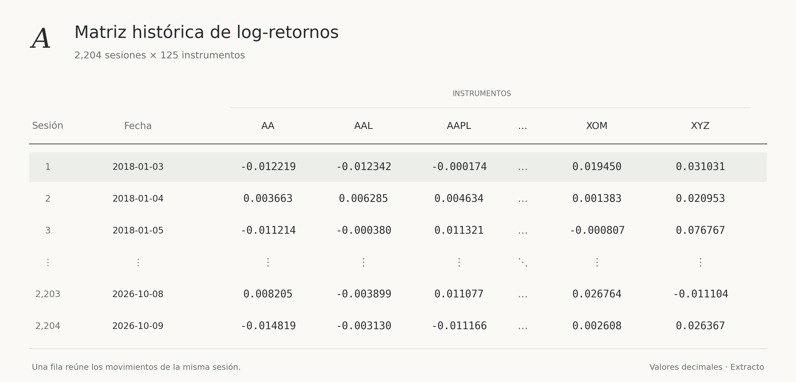
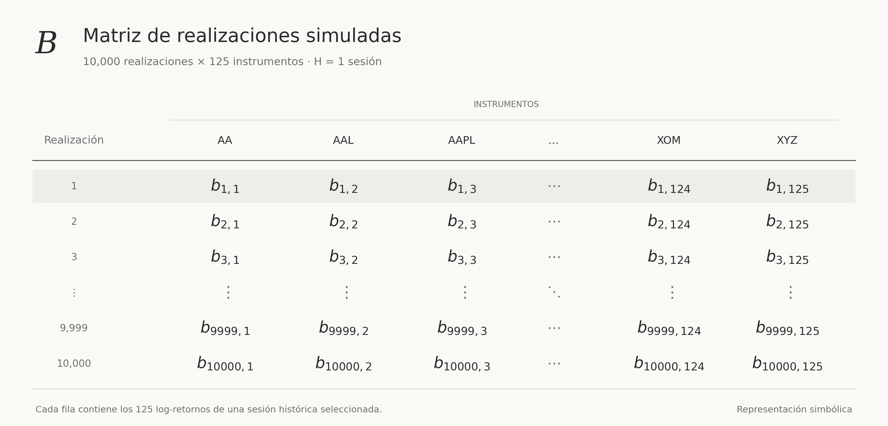
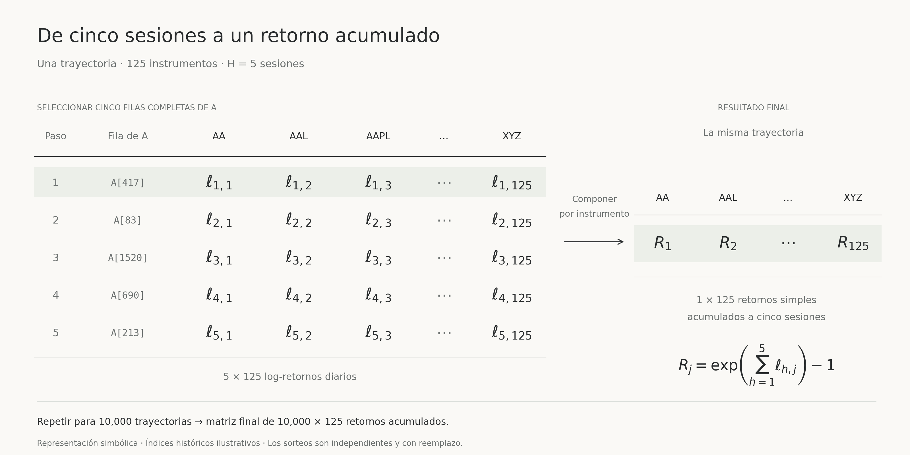
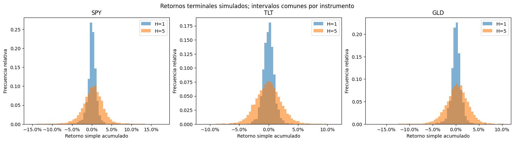
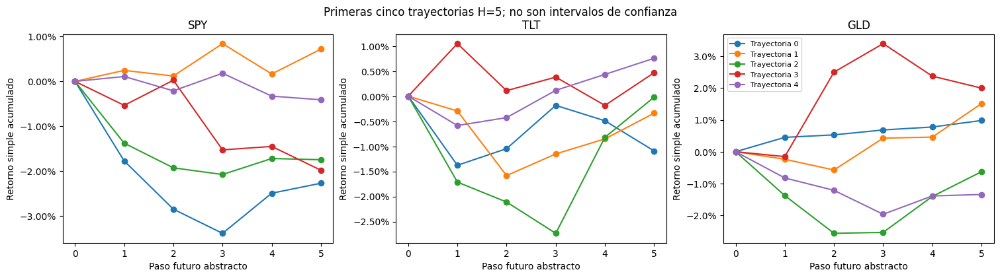
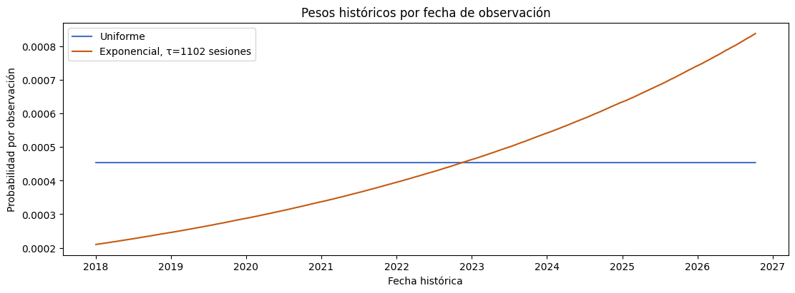
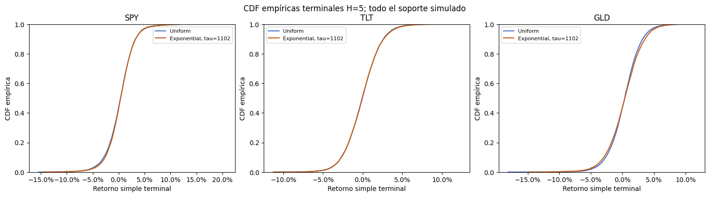

Joint Resampling: construcción de escenarios a partir de retornos históricos
Este es el primer post que publico en mi página personal, aunque la serie comenzó antes en mi Substack. Por eso, quiero empezar explicando brevemente qué me motivó a escribirla.
La idea detrás de esta serie es compartir el desarrollo del motor de portafolio que utilizo en mi día a día, explicando sus componentes a través de notebooks construidas con datos reales. Mi objetivo es compartir conocimiento y explorar métodos que van más allá del marco clásico de media-varianza y Black-Litterman.
El trabajo está inspirado en el enfoque de Anton Vorobets y, en particular, en su libro Portfolio Risk Management.
En esta entrega trabajamos con datos históricos disponibles hasta el 9 de octubre de 2026. El objetivo es entender cómo generar escenarios, qué cambia al modificar los pesos de las observaciones y cómo interpretar los resultados obtenidos.
La notebook correspondiente a esta entrega está disponible aquí, junto con las demás notebooks de la serie en mi repositorio de GitHub.
Datos de partida: la matriz A
Comencemos por los datos de entrada. Llamaré A a una matriz de 2,204 sesiones históricas × 125 instrumentos. Sus valores son retornos calculados a partir de precios ajustados reales: cada fila corresponde a una sesión histórica y cada columna a un instrumento.
Leer una fila completa de A significa observar cómo se movieron los 125 instrumentos durante una misma sesión de mercado.

Esta matriz será nuestro punto de partida para generar posibles movimientos bajo un modelo muy simple. Para producir una realización de una sesión, selecciono al azar un renglón completo de A. Inicialmente, cada sesión histórica tiene la misma probabilidad de ser elegida, es decir, (1/2204).
El muestreo se realiza con reemplazo: después de cada selección, todos los renglones siguen disponibles, de modo que una misma observación puede aparecer varias veces.
Seleccionar el renglón completo conserva los movimientos simultáneos observados históricamente. Si en una fecha SPY cayó mientras TLT y GLD subieron, esa combinación se recupera junta. Si, en cambio, sorteáramos cada instrumento por separado, romperíamos esa correspondencia histórica entre activos.
Repito este procedimiento 10,000 veces. El resultado es una nueva matriz B de 10,000 realizaciones × 125 instrumentos, donde cada fila representa un posible movimiento conjunto de una sesión bajo este modelo.
En A, cada renglón corresponde a una fecha histórica. En B, cada renglón corresponde a una realización simulada; la fecha original queda como referencia del origen de esos retornos.

Al utilizar esta distribución para representar una sesión futura, el supuesto es que la muestra histórica, con pesos uniformes, constituye una referencia adecuada. Generar estas realizaciones permite estudiar las implicaciones de ese supuesto. Su capacidad predictiva, sin embargo, es una cuestión distinta y requiere una evaluación posterior.
2. De una sesión a un recorrido de cinco
Hasta ahora, cada realización representaba el movimiento conjunto de una sola sesión. Para ampliar el horizonte, construí trayectorias de cinco sesiones.
El procedimiento consiste en seleccionar, para cada trayectoria, cinco sesiones históricas de forma independiente, recuperando siempre juntos los 125 instrumentos en cada paso. Repetí este proceso hasta obtener 10,000 trayectorias.
Una vez formada cada trayectoria, sumé los log-retornos de cada instrumento a lo largo de las cinco sesiones y después los convertí a retornos simples acumulados. El resultado es una nueva distribución de 10,000 resultados a cinco sesiones por instrumento.
La diferencia respecto al caso anterior es que ahora cada trayectoria combina movimientos reales en una secuencia que no necesariamente ocurrió de esa forma en la historia. En ese sentido, el procedimiento conserva la dependencia transversal dentro de cada sesión, pero supone independencia entre los pasos del recorrido.

3. ¿Cómo se reparten los resultados?
Con los retornos acumulados construí las distribuciones terminales y comparé los horizontes de una y cinco sesiones. Para ilustrarlo, utilicé SPY, TLT y GLD.
En el caso de SPY, la desviación estándar del retorno simple simulado pasó de 1.22% a 2.68%, lo que indica que los resultados a cinco sesiones quedaron más dispersos.
Los histogramas permiten ver cómo se reparte la distribución de los 10,000 resultados terminales en cada horizonte.

Además de la distribución final, también resulta útil observar las trayectorias que conducen a esos resultados. Para ello, seleccioné cinco trayectorias mediante identificadores fijos, no por el valor de su resultado final.

Ambas gráficas describen el comportamiento del modelo bajo esta construcción. Su capacidad predictiva, sin embargo, todavía no ha sido evaluada.
4. Dar más peso a la historia reciente
Hasta aquí, todas las sesiones históricas tenían la misma probabilidad de selección. A continuación, introduje un esquema de ponderación exponencial, en el que las observaciones más recientes reciben mayor probabilidad, mientras que las más antiguas permanecen disponibles.
Utilicé una semivida de 1,102 sesiones, con la que la mitad más reciente del historial concentra el 66.67% de la probabilidad total, frente al 50% que le correspondería bajo el esquema uniforme.
Este cambio modifica cuánto pesa cada observación dentro del muestreo, pero no altera la mecánica básica del modelo: las sesiones siguen siendo seleccionadas con reemplazo y la simulación continúa sin introducir dependencia entre los pasos.

La elección de esta semivida es, por ahora, ilustrativa. Permite estudiar cómo cambia la distribución simulada al dar más importancia a la historia reciente, pero todavía no implica una validación de capacidad predictiva.
5. Comparar ambas formas de ponderar la historia
Para comparar ambos esquemas, generé trayectorias de cinco sesiones utilizando los mismos números aleatorios en las dos simulaciones. Esto permite emparejar los resultados y observar cómo cambian al modificar las probabilidades de selección de las sesiones históricas.
En SPY, la media del retorno simple acumulado simulado pasó de 0.2833% con pesos uniformes a 0.3517% con pesos exponenciales. Por su parte, la desviación estándar disminuyó de 2.6819% a 2.5897%.
En esta ejecución, la ponderación exponencial produjo una distribución con un promedio ligeramente mayor y una dispersión algo menor.

La diferencia observada combina el efecto de reponderar la historia con la variabilidad de la simulación Monte Carlo. Por tanto, estos resultados describen cómo cambió la distribución bajo los supuestos elegidos, pero no demuestran una mejora en la capacidad predictiva del modelo.
6. Separar el efecto del modelo del ruido de simulación
Finalmente, comparé las medias obtenidas mediante simulación con sus referencias analíticas, calculadas directamente bajo cada esquema de ponderación.
El caso de TLT muestra por qué esta distinción es importante. En las simulaciones, la media del retorno acumulado a cinco sesiones pasó de −0.0441% con pesos uniformes a −0.0334% con pesos exponenciales, lo que inicialmente sugería una mejora.
Sin embargo, las medias exactas bajo ambos modelos mostraban lo contrario: pasaban de −0.0267% a −0.0583%, respectivamente. Es decir, una vez separado el ruido de simulación, el efecto del cambio de ponderación tenía el signo opuesto al que sugerían las realizaciones Monte Carlo.
| Medida | Uniforme | Exponencial |
|---|---|---|
| Simulación Monte Carlo | −0.0441% | −0.0334% |
| Referencia analítica | −0.0267% | −0.0583% |
Cambio simulado
+0.0107 pp
Cambio analítico
−0.0316 pp
pp = puntos porcentuales.
Este resultado ilustra una limitación importante: el ruido Monte Carlo puede alterar la interpretación de diferencias pequeñas, incluso cuando la implementación es correcta. Por eso, siempre que sea posible, conviene contrastar las estimaciones simuladas con referencias analíticas del modelo.
Próximos pasos
Hasta ahora, las probabilidades de selección permanecen fijas durante cada trayectoria y los pasos se generan independientemente.
En la notebook 04 estudiaré el condicionamiento por estado: cómo describir el estado del mercado y utilizar esa información para construir escenarios condicionados. Será el siguiente paso para explorar mecanismos que permitan incorporar dependencia temporal al proceso.
La implementación, los controles y los resultados completos de esta entrega están disponibles en la notebook 03 de GitHub.